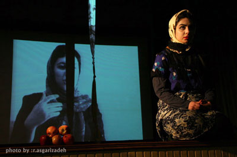

|
|
تابلوهای از زندگی راحله زمانی، زنی که نمی خواست بمیرد: تاب بازی ،نه!
شنبه25 اسفند 1386
تغییر برای برابری : "نمی خواست بمیرد. به خاطر بچه ها یش نمی خواست . به خاطر دخترش. می گفت می دانم دخترم هم که 15 ساله شود ،درست مثل من ، شوهرش می دهند اجباری و همه آن کتک ها، تحقیرها و خیانت ها درباره ی او هم تکرار می شود . می خواست نمیرد تا دخترش دچار سرنوشت او نشود."
نمایش (تاب بازی ،نه! ) ، تابلوهای کوتاه زندگی کوتاه راحله زمانی ست ، از ازدواجش در 15 سالگی تا اعدامش در 27 سالگی.

راحله پس از سالها تحمل خشونت ،تحقیر و خیانت های مکرر همسرش ، و تلاشهای بی ثمرش برای طلاق گرفتن ، شوهرش را در 24 سالگی به قتل می رساند . قتلی که همه ی کسانی که راحله را قبل از مرگش دیدند ، باور نکردند.
نمایش (تاب بازی ،نه!)، ترکیب تئاتر ، با بازی آزاده فرامرزیها و روایت مستند مریم حسین خواه و جلوه جواهری ، عصر روز چهار شنبه 22 اسفند ماه ،در آمفی تئاتر دانشکده اقتصاد دانشگاه علامه روی صحنه رفت.
این نمایش بر اساس طرحی ازآزاده فرامرزیها و نسیم خسروی مقدم و همراهی اعضای کمیته ی هنری کمپین آماده اجرا شد. نسیم خسروی مقدم کارگردان نمایش، پس از پایان اجرا، درباره ی اعدام راحله در دی ماه 86 گفت:«علیرغم تلاش فراوان زهره ارزنی، خدیجه مقدم، محبوبه حسین زاده، ناهید کشاورز، آیدا سعادت و مرجان سخاوتی از فعالان جنبش زنان و کمپین یک میلیون امضا، این حکم اجرا شد»
مریم حسین خواه و جلوه جواهری ، در زمان اعدام راحله زمانی ، به خاطر فعالیت هایشان در کمپین یک میلیون امضا ، در زندان اوین به سر می بردند.